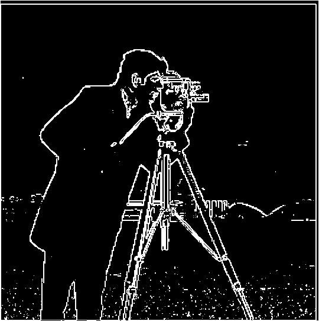
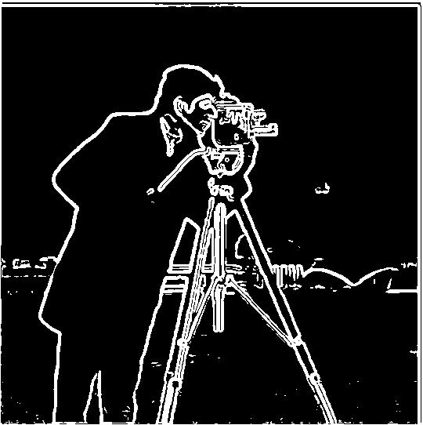
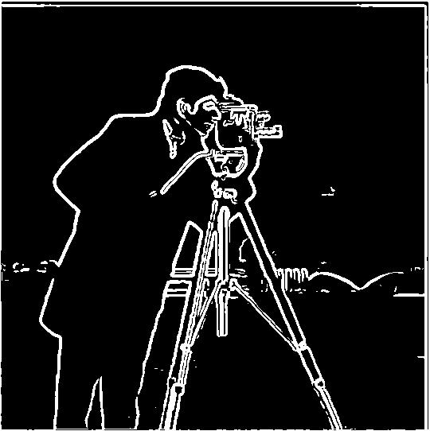
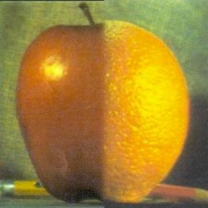

Cool project about frequencies.
My code used only numpy: the four for loops use simple indexing, and the two for loops make use of numpy vectorized operations. How it works is it slides the kernel over the image, calculates the sum of the multiplied values, and puts that as the answer. The box filter averages the values in the box, causing a blur; Dx looks at the horizontal change, finding vertical edges; Dy does a similar thing but finds horizontal edges. For padding I used numpy.pad (it defaults to constant 0 padding), which is how I deal with boundaries, and is the same as scipy's convolve2d. In comparison with scipy.signal.convolve2d: runtime-wise, the four-loop version is way slower, and the two-loop version is similar in speed (because of the vectorized operations). Scipy's convolve2d is way faster (use of compiled code and probably efficient vectorized operations), often at least 10x faster.
def naiveConvolution(img,kernel):
#using same padding
kh,kw = kernel.shape
H,W = img.shape
ans = np.zeros(img.shape)
paddingW = (kw-1)//2
paddingH = (kh-1)//2
img = np.pad(img, ((paddingH, paddingH), (paddingW, paddingW)))
for y in range(H):
for x in range(W):
tempans=0
for j in range(kh):
for i in range(kw):
tempans+=img[y+j][x+i]*kernel[j][i]
ans[y,x]=tempans
ans=np.array(ans)
return ansdef optimizedConvolution(img,kernel):
kh,kw = kernel.shape
H,W = img.shape
ans = np.zeros(img.shape)
paddingW = (kw-1)//2
paddingH = (kh-1)//2
img = np.pad(img, ((paddingH, paddingH), (paddingW, paddingW)))
for y in range(H):
for x in range(W):
ans[y,x]=np.sum(img[y:y+kh,x:x+kw]*kernel)
ans=np.array(ans)
return ansI convolve with D_x and D_y to get the partial derivatives. I compute the gradient magnitude at each pixel using the formula sqrt(dx^2 + dy^2). This marks where the change in intensity is high, not necessarily the direction. Then I only select those above my threshold. I chose a threshold of 0.2, because even though there was still a little noise at the bottom, it keeps more of the edges of the buildings behind, which are lost at the next threshold.

I built a 2D gaussian (5×5 kernel, sigma = 1.5 for approach (a) and sigma = 1 for the DoG in (b)) following the procedure mentioned in the instructions. In one approach I applied the kernel to the image and then dx and dy; in the single convolution I apply the gaussian to each and then convolve. What I notice is that, as you can see by the sweep, the noise gets removed very quickly after differentiating, at lower thresholds. Both the single convolution and the gaussian produce the same image (some nuance with padding, but regardless). This is because of the associativity of the operation, where the order doesn't really matter.


We want to extract the high frequencies of the image (which supposedly correspond to detail). To get this we can blur the image with a gaussian kernel (I chose a 5×5 kernel with sigma = 1). You can then apply this back with alpha. When alpha gets high we see the features get exaggerated, but as it becomes too high we start to see weird artifacts appear.
Sharpening the blurred image helps, but there are some details that were lost, like some wrinkles here and there in the shirt, etc. Sharpening can only exaggerate details that exist, and blurring removes some.
Humans tend to see high frequencies up close but low frequencies from far away. This is the crux of the optical illusion. To do this we use the function to align the images; the low-frequency image is blurred and the high-frequency one is the impulse. For the low-frequency image, the energy captured by the FFT is more contained/constrained; for the high-pass FFT, the center is weaker, but everywhere else the other frequencies are kept. The hybrid combines both: we see Akhil in the center, while mine is on the outside. The sigmas are chosen by trial and error.
The sigmas are chosen by trial and error.
For the gaussian stack, level 0 is just the original image and each level after is the previous one blurred more, where I double the sigma each time (1, 2, 4, 8, 16). I don't downsample so everything stays the same size (this was specified in the spec). The laplacian stack is just the difference between two consecutive gaussian levels (Li = Gi − Gi+1), so each one grabs a single level of detail. The early levels have the fine edges and texture, the middle ones have coarser stuff, and the last level is just the final gaussian which holds the low frequency color and lighting (very important to the image). This is intuitive when we see how we subtract (i.e at each level we subtract ). If you add all the levels back up you get the original exactly. Since the laplacian levels have negative values too, I map zero to gray so you can see them, where brighter is positive and darker is negative.
To blend I make a laplacian stack for each image and a gaussian stack for the mask, and at every level I combine them as Gi(mask)·Li(A) + (1 − Gi(mask))·Li(B), then add all the levels up for the final image. This works because when the mask is sharper it corresponds to the levels that have the finer details, so those stay within their boundaries; but as the mask gets blurrier we get to the lower levels which (as mentioned before) correlate with stuff like lighting and base color, which makes those transition smoothly and gives a nice blend.

Here I show the gaussian mask and the masked apple and orange laplacian bands at levels 0, 2, and 4, their blended sums, and the reconstructed halves that add up to the oraple.
For my own blends, the earth and moon one uses a vertical mask just like the oraple: Earth is the left half and the Moon is the right half, and since both are the same size and lined up they merge into one planet that is half Earth and half Moon with a smooth seam down the middle. The sphere and campanile one uses an irregular dome-shaped mask (the outline of the sphere), so the yellow sphere gets pulled into the campanile scene, and because the mask is blurred at the coarse levels it settles in instead of looking like a hard cutout.
I learned how important (and relatively simple to work with) frequencies are. We saw that with gaussians we can make edge detection better. By also looking at the impulse we can add details to images (exaggerate them). This also unlocks seamless blending. The ability to look at and isolate these frequencies gives us so much control over an image. This result is very cool to me, and I definitely want to play with using neural nets to do stuff with frequencies to get some generative properties.